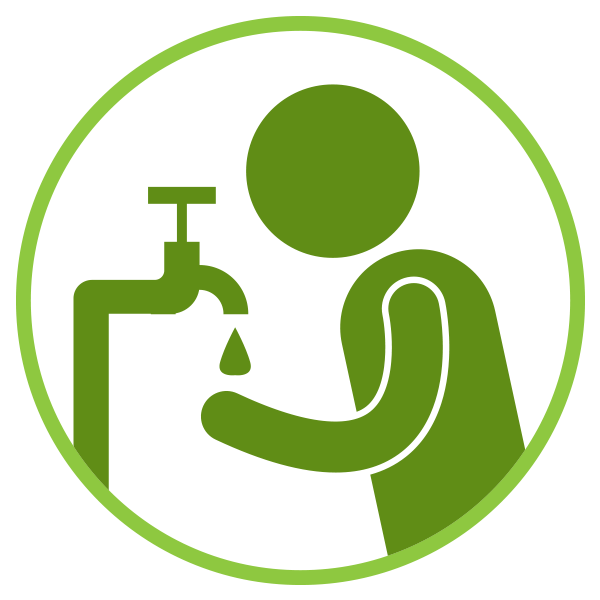
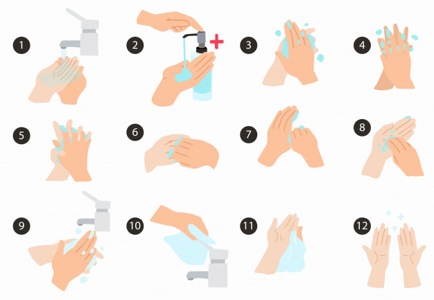
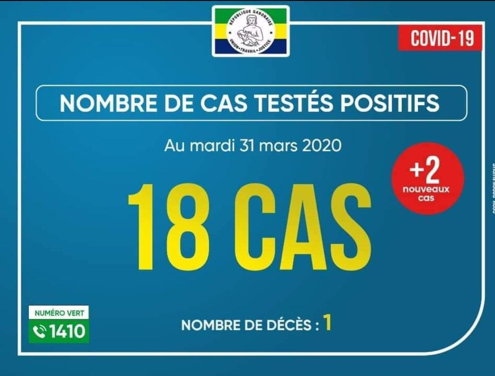

Le 31 décembre 2019, un nouveau virus de la famille des Coronaviridae impliqué dans une série de cas
de pneumonie atypique a été détecté dans la ville de Wuhan en Chine. Ce virus a été initialement
nommé 2019-nCoV. Il porte désormais le nom de SARS-CoV-2. La maladie associée à ce virus est le
COVID-19. Depuis son identification, un nombre croissant d’infections respiratoires attribuables au
SARS-CoV-2 ont été déclarées à travers le monde.
La plateforme « Bloquercovid-19 » est une application web qui regroupe de nombreuses solution
pratique afin de permettre aux PME et aux populations de rester actives et productives durant cette
période de crise sanitaire.
Vous souhaitez réaliser un auto-test simple et rapide afin de déterminer si pourriez être porteur ou
non du virus COVID-19 ? C’est possible en quelques clics.
Vous êtes à la recherche d’outils pratiques pour continuer votre activité en télétravail, vous
former avec des cours en ligne ou même vous divertir ? Vous êtes à la bonne adresse.
Lutter contre le contre cette épidémie c’est possible même à votre échelle, pour cela il vous suffit
d’avoir les bons gestes, suivre les recommandations de sécurité et de rester informés.
Bons gestes
Pour empêcher le virus d'infecter un plus grand nombre de personne, il est extrêmement important de
respecter les consignes suivante qui sont directement transmise par l'OMS.

Se laver les mains fréquemment
Bien se laver les mains (avec du savon et de l'eau) minimise le risque d'être contaminé après
avoir été en contact avec une surface qui a été préalablement contaminé par une personne
malade, puis se toucher le visage, la bouche ou les yeux.
Avoir du gel hydro-alcoolique sur soi
Le gel hydroalcoolique, un allié face aux épidémies. À défaut d’eau et de savon, utilisez un
gel hydroalcoolique pour vous nettoyer les mains. Les règles sont les mêmes, le geste est à
répéter à chaque fois que nécessaire.
Maintenir une distance social
Il faut observer une distance de sécurité d'un mètre entre les personnes. C'est la distance
qui permet de ne pas être touché par les gouttelettes du nez ou de la bouche susceptible de
contenir le virus.
Tousser dans le coude
Si l’on se couvre la bouche et le nez avec la main, les microbes déposés sur la main peuvent
se transmettre à d’autres personnes, par exemple en se serrant la main ou en touchant un
objet. C’est pourquoi il est recommandé d’éternuer ou de tousser dans le pli de son coude.
Utiliser des mouchoirs à usage unique
Pour des raisons sanitaires, il est demandé aux particuliers que les mouchoirs soient jetés
dans un sac plastique dédié, résistant. Cela préservera l’environnement et évitera la
diffusion du virus.
Éviter de se toucher la bouche, le nez et les yeux
Nez, yeux et bouches sont autant de "portes d'entrées" possibles au virus. En période
d'épidémie, il est préférable d'éviter au maximum de se toucher le visage avec les mains,
potentiellement contaminées.
Comment se laver correctement les mains ?

Statistiques

Accédez en temps réel au informations sur l'évolution de l'épidémie dans le monde entier grâce à
l'application Tracking Coronavirus
COVID-19
Se divertir pendant le confinement
CANDY CRUSH
Les accros au jeu mobile Candy Crush le savent déjà, puisqu’ils ont reçu un message sur
l’application : Jouez tant que vous voulez. Pendantune semaine à partir de
mercredi 17 mars, les créateurs du jeu ont décidé d’offrir des vies en illimité ! Avec plus
de 200 millions
d’utilisateurs (dont 9 millions qui jouent plus de 3 heures par jour!), ce jeu s’avère être
un
passe-temps efficace (voire addictif).
DES ARTICLES GRATUITS
Certains médias français (suivant une initiative du New York Times américain), ont décidé
d'ouvrir gratuitement l'accès à des articles et contenus habituellement payants. En France,
Le
Monde a lancé le mouvement, avant d'être suivi par Le Figaro. L'occasion de s'informer de
manière sûre et gratuite, notamment sur la crise sanitaire que l'on traverse.
Regarder Netflix ensemble
Justement, il est parfois difficile de rester en contact avec ses proches lorsque l’on est
cloîtré chez soi. Pour continuer à échanger, à partager avec ses amis ou sa famille, on peut
utiliser “Netflix Party”. Cette extension gratuite de Google Chrome permet de discuter avec
ses
amis en regardant Netflix ensemble ! Une alternative aux “apéros Skype”, que l’on voit
circuler
sur les réseaux sociaux depuis quelques jours.
Pour les plus mélomanes, le site Arte concert propose de diffuser un concert tous les jour à
midi
sur Facebook. Une volonté de se “rassembler virtuellement autour de la musique live en
attendant
de jours meilleurs”, peut-on lire sur leur page Facebook, avec le hashtag #Restonsencontact.
DEPONIA
Le jeu d’aventure et d’énigmes Deponia est lui aussi gratuit pendant la crise pour aider à
endiguer la propagation du virus.
L’éditeur Daedalic Entertainment promet d’envoyer une clé Steam gratuitement aux joueurs qui
répondent en commentaire avec les hashtag #FlattenTheCurve et #Platypus.
UNE ŒUVRE DE HIDEO KOJIMA
Les Toulousains de Third Editions proposent gratuitement en téléchargement l’ebook de leur
livre
Metal Gear Solid. Une œuvre culte de Hideo Kojima.
Le téléchargement (ePub ou MOBI) se fait sur le site de l’éditeur.
ANKAMA : DOFUS ET WAKFU
L’éditeur français Ankama offre une semaine d’abonnement à ses jeux Wakfu et Dofus pour les
comptes crée il y a au moins 3 jours avant l’utilisation du code.
Code pour Dofus : DOFUSMARS2020
Code pour Wakfu : WAKFUMARS2020
ADN : NARUTO ET NARUTO SHIPPUDEN SONT GRATUITS
ADN, l’un des principaux services de streaming d’animés en France, a décidé de proposer du
contenu gratuitement.
Pendant cette période de confinement vous avez certainement besoins de continuer à suivre des
projets , à communiquer avec vos collaborateurs et échanger
des documents importants. Le numérique
nous offre un très grand nombre d'outil nous permettant de réaliser ces actions. Nous vous avons
fait une sélection de quelques une de ses solutions.
Suivi de projet
Trello
Trello est un outil de gestion de projet en ligne extrêmement complet et intuitif. Il
s’inspire des méthodes agiles et du kanban, mais offre des possibilités bien plus poussées.
Le principe est le suivant : sur Trello vous pouvez créer des tableaux. Dans chaque tableau
vous pouvez créer des listes dans chaque liste vous pouvez créer des carte. Les cartes
peuvent être déplacé d'une carte à l'autre.
Cela est idéal si vous souhaiter visualiser facilement l’avancée d’un projet mais ce n’est
pas tout. Trello est un outil totalement collaboratif où chaque membre peut éditer et
intervenir en temps réel. Par ailleurs, il est parfait pour vous fixer des objectifs SMART,
grâce notamment à la fonctionnalité checklist sur les cartes. Elle vous permet de détailler
différentes étapes de conception d’un projet et de cocher les cases au fil de l’avancement.
Asana est lui aussi un logiciel de gestion de projet. Il permet de faciliter la
communication et la gestion de tâches entre les membres d’une équipe ou les différents
intervenants d’un projet.
Asana est gratuit dans la limite de 15 utilisateurs et permet de créer des projets en
tableau, en calendrier ou en timeline.
C’est un logiciel aussi simple à utiliser que Trello et la principale différence réside dans
cette possibilité de visualiser de 3 manières différentes, là où Trello, dans sa version
gratuite, ne propose que des tableaux kanban.
Fabuleux outil de collaboration, Slack n’est plus à présenter. Il permet à vos salariés de
rester en contact de manière intuitive, de partager des documents, d’éditer des to-do list
communes, etc.
Slack propose plusieurs outils pour que votre équipe augmente sa productivité :
Un espace de travail unique pour toute l’équipe
Des canaux de discussions classés par sujet
Une messagerie privée
L’organisation d’appels audio et vidéo à plusieurs
Anciennement Teamweek, Toggl Plan est un excellent complément aux logiciels de gestion de
tâches présentés précédemment. Il permet de gérer des projets sur plusieurs mois en
permettant une visualisation des tâches des différents membres de l’équipe, au sein d’un
calendrier.
Ce qui est particulièrement utile avec cet outil, c’est la possibilité d’afficher le projet
en mode semaine, mois ou trimestre, pour vraiment visualiser l’évolution du projet.
Par ailleurs, il est possible d’importer ses tâches Trello ou iCal, ce qui rend la
complémentarité encore plus intéressante. L’outil est gratuit jusqu’à 5 utilisateurs.
Google Hangouts Meet est l’excellent service de visioconférence de Google. Jusqu’au 1er
juillet, les fonctionnalités premium de Google Hangouts seront gratuites pour les
entreprises et les écoles.
En d’autres termes, tous les clients G Suite ou G Suite For Education auront accès à :
des appels jusqu’à 250 participants ;
la possibilité de streamer une conférence jusqu’à 100 000 spectateurs ;
la possibilité d’enregistrer une réunion sur Google Drive.
MICROSOFT TEAMS
Microsoft a également décidé de proposer ses outils de collaboration en ligne gratuitement.
Plus précisément, les personnes qui n’avaient pas accès à Microsoft Teams, le concurrent de
Slack et remplaçant de Skype Entreprise, peuvent dès aujourd’hui s’inscrire pour recevoir
une licence gratuite d’utilisation jusqu’en janvier 2021.
Cette offre intègre :
des appels avec jusqu’à 250 participants
la possibilité de streamer une conférence jusqu’à 10 000 spectateurs
historiques de chat illimité
10 Go de stockage par équipe
2 Go de stockage par utilisateur
Les personnes qui utilisaient déjà la version gratuite de Microsoft Teams ont le droit aux
mêmes bénéfices, habituellement réservés à la version payante, depuis le 10 mars.
Zoom
Zoom est un outil similaire à Skype. Il permet d’organiser des appels téléphoniques en tête à
tête ou en équipe, au sein de salles de réunion virtuelles.
Mais bien plus que la possibilité de s’appeler de n’importe où dans le monde, Zoom offre
également des fonctionnalités extrêmement pratiques :
Possibilité d’enregistrer les conversations et de les sauvegarder sur son bureau ou dans le
cloud de Zoom
Chat pour converser pendant la réunion, se transmettre des informations, des liens, etc.
Partage d’écran
Mode webinaire
Possibilité d’organiser des téléconférences à très grande échelle.
Zoom est par ailleurs un outil très stable, qui consomme peu de bande passante et garantit
de ce fait une excellente qualité des échanges.
Skype est un logiciel qui permet aux utilisateurs de passer des appels téléphoniques ou vidéo
via Internet, ainsi que le partage d'écran. Les appels d’utilisateur à utilisateur sont
gratuits, tandis que ceux vers les lignes téléphoniques fixes et les téléphones mobiles sont
payants
WhatsApp Business est une application à télécharger gratuitement, conçue pour les besoins des
propriétaires de petites entreprises. Créez un catalogue pour présenter vos produits et
services. Interagissez en toute simplicité avec vos clients à l'aide d'outils
d'automatisation, de tri et de réponses rapides aux messages.
WhatsApp peut également aider les moyennes et grandes entreprises à offrir de l'assistance
clientèle et livrer d'importantes notifications à leurs clients. Apprenez-en plus sur l'API
Business WhatsApp.
Partage de documents
WETRANSFER
Wetransfer est un logiciel de transfert de fichier. Gratuit jusqu’à 2 Go, il permet de faire
passer des documents lourds, en toute simplicité. L’interface est agréable et les
fonctionnalités simples mais très bien pensée.
Envoie une notification par email au destinataire, quand les fichiers sont prêts à être
récupérés.
Préviens par mail l’expéditeur quand le destinataire a téléchargé ses fichiers
Envoi un rappel quand un fichier n’a pas été téléchargé après plusieurs jours.
Il est possible d’envoyer des fichiers ou des dossiers avec Wetransfer.
Faut-il encore présenter Google Drive ? Le cloud de Google est un excellent moyen de se
transmettre des fichiers facilement, sans limite de poids.
Dans sa version gratuite, Google Drive offre 15 Go de stockage à chaque utilisateur. Les
forfaits payants permettent d’augmenter cette limite à 30Go pour le moins cher puis en
illimité, pour les autres formules.
Simple à utiliser, il permet également de classer ses fichiers en dossiers très facilement
et d’indiquer quels fichiers ou dossiers peuvent être partagés avec un autre utilisateur. À
titre de comparaison, Dropbox n’offre que 2 Go de stockage gratuit.